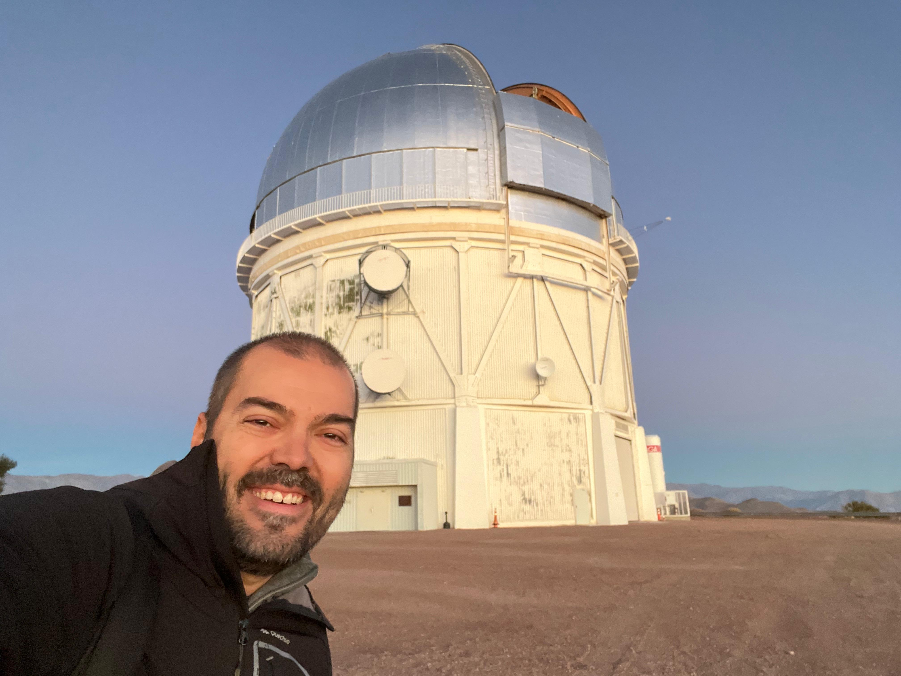
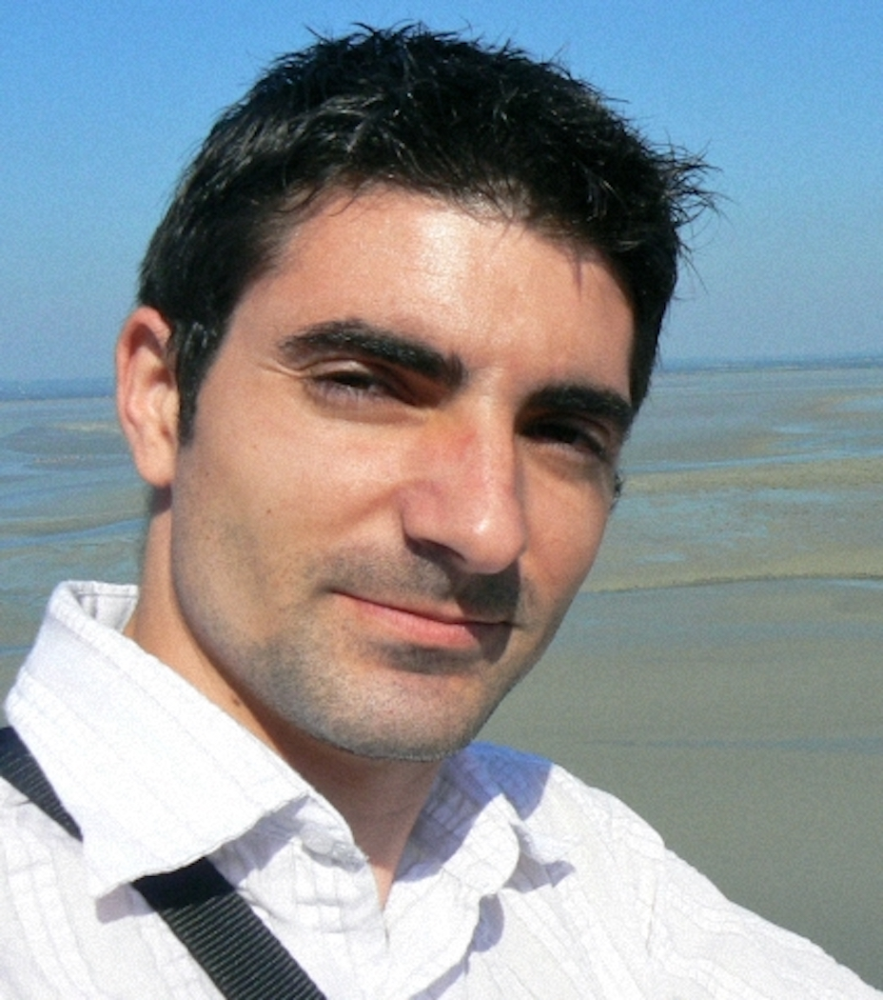
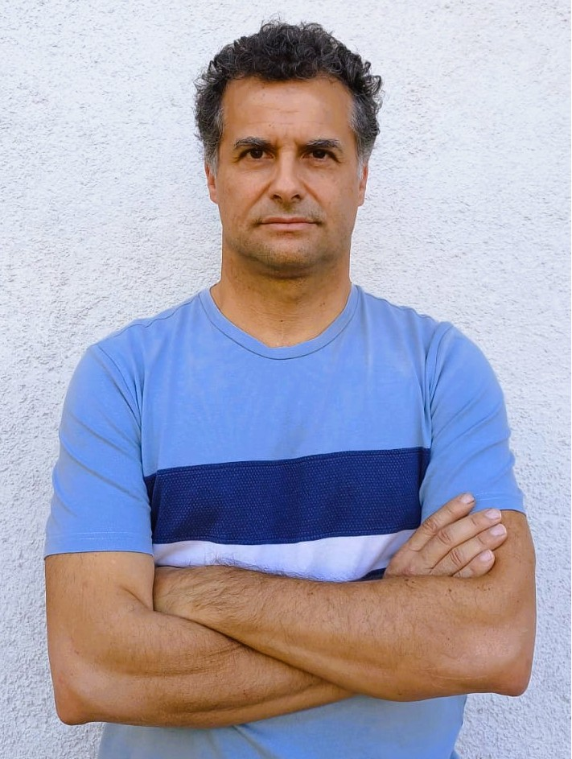
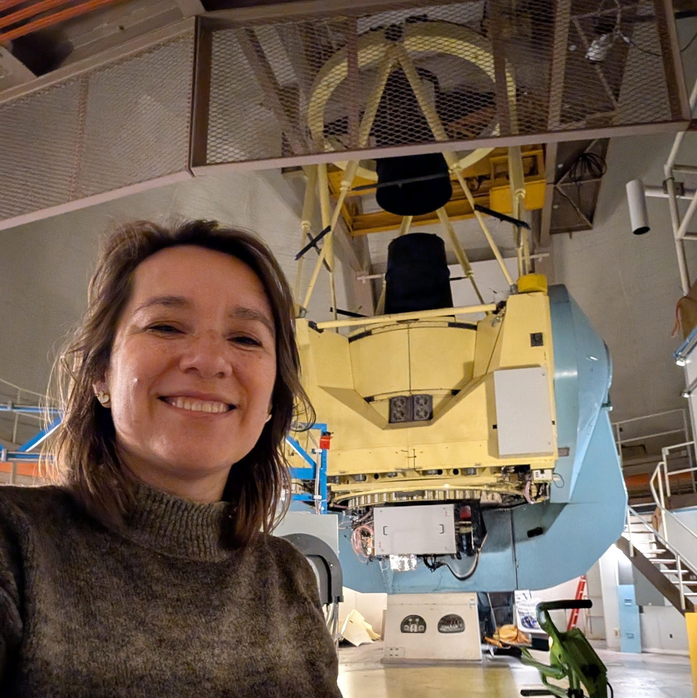

Franz Bauer
Profesor Titular
Black Hole Physics ?? Galaxy Formation & Coevolution ?? Large Surveys ?? Transients
Black Hole Physics, Structure, Demographics, Feeding, and Evolution ?? Galaxy Formation and Coeval Growth of Galaxies and Supermassive Black Holes ?? Large Surveys (Radio through X-ray, Imaging/Spectroscopic, Time-Domain) ?? Transients (SNe, TDEs, FXTs, GW Events, Changing-State AGN)
fbauer

Julio A. Carballo-Bello
Profesor Asistente
C??mulos Globulares ?? Halos Gal??cticos ?? Nubes de Magallanes
Investiga la estructura y din??mica de c??mulos globulares gal??cticos y extragal??cticos, con especial inter??s en las Nubes de Magallanes y el halo de la V??a L??ctea.
jcarballo

Alexandre Gallenne
Profesor Asistente
Estrellas Variables ?? Cefeidas ?? Interferometr??a ?? Escala de Distancias
Astronom??a de alta resoluci??n angular mediante interferometr??a ??ptica/infrarroja de l??nea de base larga e imagen con ??ptica adaptativa. Su trabajo se centra en estrellas pulsantes (especialmente Cefeidas) y sistemas binarios, con el objetivo de medir con precisi??n masas, radios y distancias estelares para mejorar la calibraci??n de la escala de distancias c??smica. Sus intereses incluyen la medici??n interferom??trica de di??metros estelares, soluciones orbitales combinando interferometr??a, velocidades radiales y astrometr??a Gaia, caracterizaci??n de compa??eras mediante ??ptica adaptativa, y el estudio de entornos circumestelares que pueden sesgar las determinaciones de precisi??n.
agallenne

Giuliano Pignata
Profesor Titular
Supernovas ?? Astrof??sica Transitoria ?? Fotometr??a
Investiga supernovas y otros fen??menos transitorios de alta energ??a. Amplia trayectoria en observaci??n fotom??trica y espectrosc??pica de explosiones estelares.
gpignata

B??rbara Rojas-Ayala
Profesora Asociada
Enanas M ?? Exoplanetas ?? Espectroscop??a Infrarroja
Especialista en estrellas enanas tipo M y sus sistemas planetarios. Utiliza espectroscop??a infrarroja para caracterizar propiedades estelares y b??squeda de exoplanetas.
brojasayala